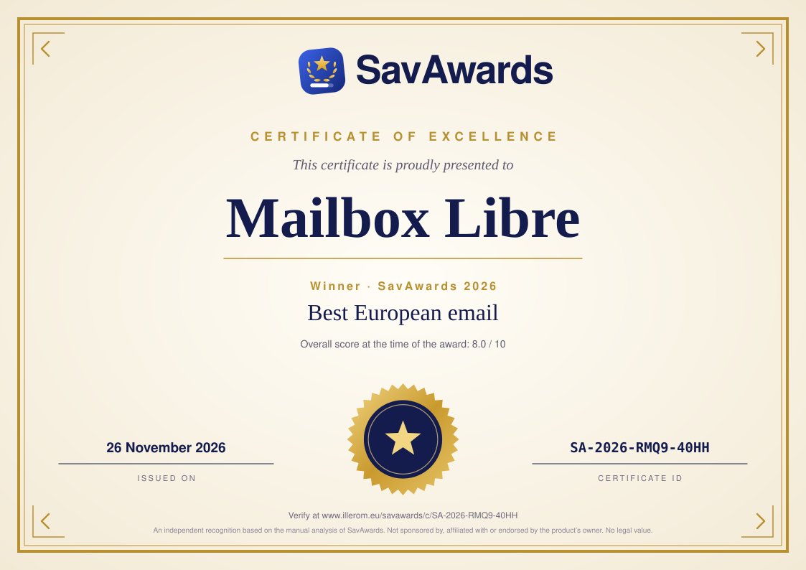
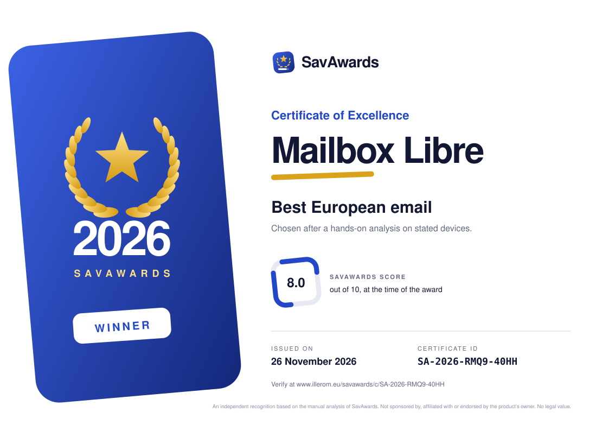
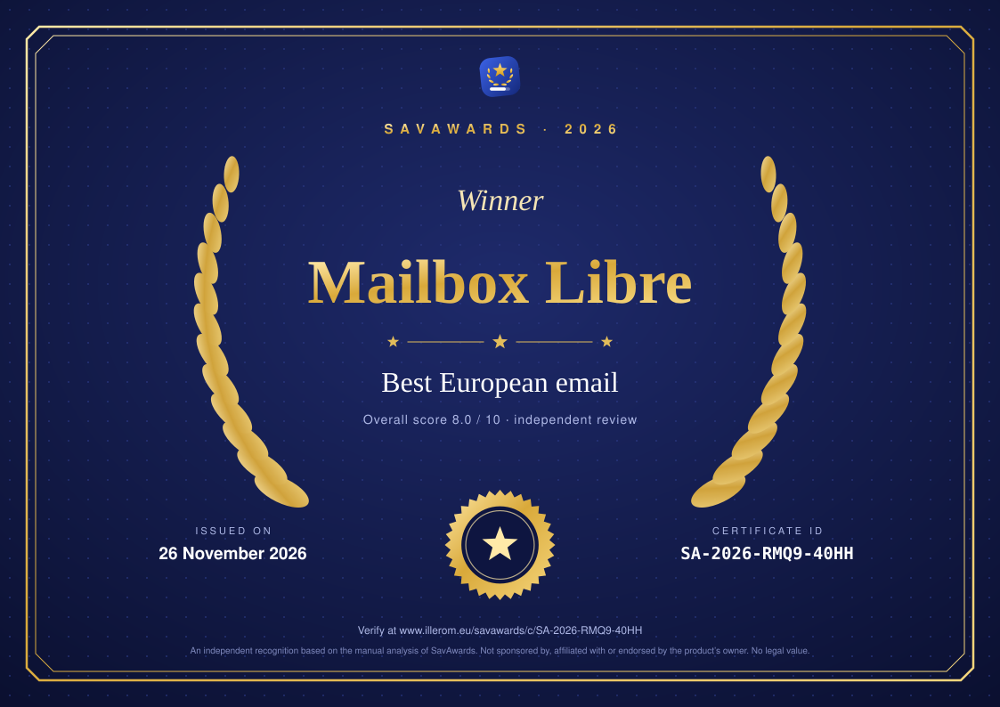
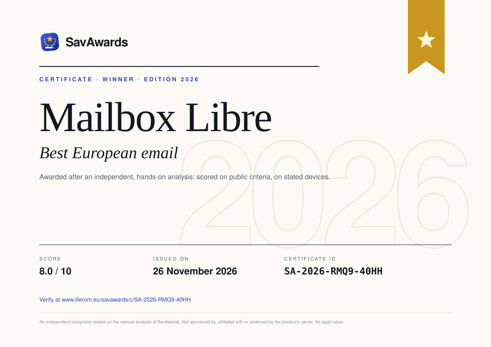
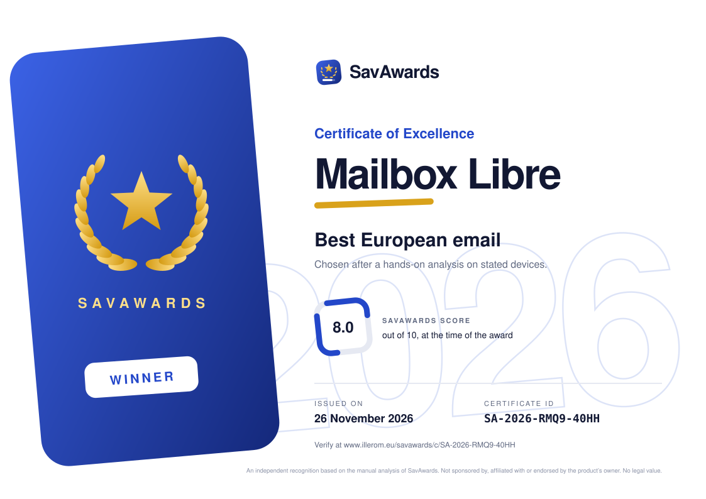

<!doctype html><meta charset="utf-8"><title>SavAwards · proposte di certificato</title><style>body{margin:0;padding:24px;background:#d9dce6;font:15px system-ui;display:grid;grid-template-columns:repeat(2,minmax(0,1fr));gap:24px}figure{margin:0}figcaption{font-weight:700;margin:0 0 8px}img{width:100%;height:auto;display:block;box-shadow:0 10px 30px rgb(0 0 0 / .25)}</style><figure><figcaption>A · Classico (come Fucina)</figcaption></figure><figure><figcaption>B · Tilt (lo stile dell’app)</figcaption></figure><figure><figcaption>C · Notte e oro</figcaption></figure><figure><figcaption>D · Editoriale</figcaption></figure><figure><figcaption>E · Tilt con l’anno di D</figcaption></figure><figure><figcaption>F · Tilt con l’anno di D (solo fuori dal riquadro)</figcaption></figure>